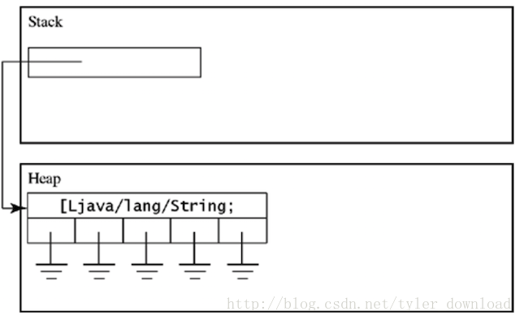
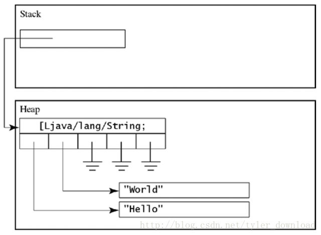

由于本节代码逻辑有点复杂，请参看视频用java开发C语言编译器 以便加深理解和掌握
上一节，我们在C程序中引入结构体，在编译成java字节码时，我们把结构体转换成一个只包含公有数据成员的类，于是我们把含有结构体的C代码成功编译成了java字节码，这节我们要在上一节的基础上加大难度，把结构体变成结构体数组，看看我们的编译器是如何把含有结构体数组的C代码编译成java字节码的。完成本节代码后，我们的编译器能把下面C代码编译成java字节码并能在虚拟机上正确运行：
struct CTag {
int x;
char c;
};
void main() {
struct CTag myTag[5];
myTag[2].x = 1;
printf("the x value of second struct object is :%d", myTag[2].x);
}
end我们把C语言中的结构体等价于java虚拟机上的一个类，那么结构体数组自然就可以对应于java上的类数组，由此我们先看看jvm提供了那些指令让我们操作类数组，以及这些指令的用法。
在jvm上，要想生成一个类数组，需要用到的指令是anewarray,在使用这个指令之前，我们需要在堆栈上压入一个数值，用于表示要生成的数组长度。假定有一行java代码如下：
String[] ss = new String[5];要把上面的代码转换成虚拟机字节码时，我们需要这么做，首先把数组的元素个数5压入到堆栈，然后使用anewarray 指令在堆栈上创建一个String数组对象，代码如下：
sipush 5
anewarray java/lang/Stringanewarray 指令后面跟着类的类型，上面的指令在堆栈上生成了一个字符串数组对象，字符串含有5个元素，每个元素是一个指向heap上String类型实例的引用，由于我们只是生成了一个含有5个元素的数组，jvm会自动把数组中的五个元素初始化为null,上面字节码执行后，虚拟机的堆栈情况如下：

注意到，anewarray 指令在堆栈顶部生成了一个引用，这个引用指向了一个存在heap里的一个含有5个字符串类型的数组实例，并且实例中的每个元素都指向null.
要想使用字符串数组，我们就必须使得数组中的元素都指向一个字符串实例，这就需要使用到指令aastore, 和 aaload, 例如我们想让字符串数组的第0和第1个元素分别指向字符串”hello”和”world”, 那么我们需要确保anewarray生成的字符串数组对象在堆栈顶部，接着把数组元素的下标压入堆栈，最后再把具体字符串压入堆栈顶部，然后执行一次aastore指令，于是要想让ss[0]指向字符串”hello”，相应的指令如下(承接上面代码，于是字符串数组对象已经存在堆栈顶部)：
astore 0
aload 0
sipush 0
ldc "hello"
aastore由于ss[0]对象已经存在堆栈上，所以指令astore 0先把它存储到局部变量队列的第0个位置，然后用aload 0再次把它从局部队列加载到堆栈顶部，这么做看似多此一举，但这对后面的指令有作用。然后把要赋值的数组元素下标放到堆栈顶部，也就对应sipush 0， 最后把数组元素0要引用的字符串”hello”压到堆栈顶部，因此在执行指令aastore前，堆栈情况如下：
stack: ss[0] “hello” 0
执行指令aastore后，元素ss[0]就不再是null了，它会指向字符串”hello”。指令aastore执行后，堆栈上所有元素会被清空。为了把字符串数组下标为1的元素指向字符串”world”,我们需要把字符串数组对象重新加载到堆栈上，所以需要执行指令aload 0, 接着把下标1压入堆栈，最后把字符串”world”压入堆栈，然后再次执行aastore指令，相关代码如下：
aload 0
sipush 0
ldc "world"
aastore上面两段代码执行后，堆栈情况如下：

既然数组的元素0和1都已经指向了两个有效的字符串，如果程序想要通过这两个数组元素获取他们指向的字符串，那么就需要使用指令aaload,例如要想访问ss[0]执行的字符串”hello”，那么我们需要把字符串数组对象加载到堆栈顶部，燃爆把元素下标压入堆栈，然后执行aaload指令，代码如下：
aload 0
sipush 0
aaload上面代码执行后，堆栈顶部存储的是一个String类型的引用，这个引用指向存储在Heap里面的字符串实例”hello”。基于这些原理，我们就可以把C语言中含有结构体数组的代码编译成java字节码了，我们完全可以照猫画虎，把上面的String对象换成结构体对象就可以了。
回到前面的C语言代码，对照上面的原理，我们看看如何把含有结构体数组的C语言代码编译成字节码。编译器解读代码时，当解读到这一句：struct CTag myTag[5];，它会创建一个Symbol对象，该对象对应的变量名称为myTag,并记录下，它是一个含有5个元素的数组。
当编译器读取语句：myTag[2].x = 1;时，它会使用anewarray指令生成一个CTag类的数组，按照前面讲过的指令用法，我们的编译器会产生如下指令：
(代码片段1）
sipush 5
anewarray CTag
astore 0同时编译器此时知道，代码想对数组中的第二个对象中的x成员赋值为1，前面讲过，anewarray 指令只是生成了数组对象，数组中的每个元素会被初始化为null,此时要对第二个元素指向的对象进行赋值，那么就必须为第二个元素生成一个CTag类的实例，于是编译器要接着生成如下指令，（代码片段二）：
aload 0
sipush 2
new CTag
dup
invokespecial CTag/<init>()V
aastore上面指令把CTag类型数组对象加载到堆栈上后，把数组元素的下标2压入堆栈，然后创建一个CTag实例对象，初始化后，通过aastore指令把该对象的引用存入到数组对象的第二个元素。
接着代码需要对第二个元素指向的实例所包含的成员x赋值，于是编译器需要生成指令，把数组第二个元素引用的实例加载到堆栈上，然后使用上一节讲过的方法对类成员赋值，于是它会产生如下指令，（代码片段3）：
aload 0
sipush 2
aaload
sipush 1
putfield CTag/x Iaload 0 把数组对象加载到堆栈后，压入要访问的元素下标2，通过aaload指令把元素二引用的类实例加载到堆栈上，使用上节讲过的指令修改类实例的成员变量。
最后编译器解读到语句：printf(“the x value of second struct object is :%d”, myTag[2].x); ，这条语句中，我们需要读取数组第二个元素指向实例的类成员x,那么编译器需要生成指令，把它加载到堆栈上，然后使用上一节的办法，读取类实例的成员变量值，于是会生成如下代码（指令片段4）：
aload 0
sipush 2
aaload
getfield CTag/x I上面指令先把数组对象加载到堆栈上，然后把要访问的数值元素下标2压到堆栈，接着使用aaload指令把元素2指向的类实例加载到堆栈上，然后使用指令getfield 获取该实例成员变量x 的值。
按照上面描述的指令生成步骤，我们要对编译器做相应代码修改。在解析语句myTag[2].x = 1;时，代码会进入到UnaryNodeExecutor.java中，于是我们做如下代码修改：
case CGrammarInitializer.Unary_LB_Expr_RB_TO_Unary:
child = root.getChildren().get(0);
symbol = (Symbol)child.getAttribute(ICodeKey.SYMBOL);
child = root.getChildren().get(1);
int index = (Integer)child.getAttribute(ICodeKey.VALUE);
try {
Declarator declarator = symbol.getDeclarator(Declarator.ARRAY);
if (declarator != null) {
Object val = declarator.getElement(index);
root.setAttribute(ICodeKey.VALUE, val);
ArrayValueSetter setter = new ArrayValueSetter(symbol, index);
root.setAttribute(ICodeKey.SYMBOL, setter);
root.setAttribute(ICodeKey.TEXT, symbol.getName());
//create array object on jvm
if (symbol.getSpecifierByType(Specifier.STRUCTURE) == null) {
//如果是结构体数组，这里不做处理，留给下一步处理
ProgramGenerator.getInstance().createArray(symbol);
ProgramGenerator.getInstance().readArrayElement(symbol, index);
}
}
....当编译器解析到数组读取时会执行上面代码，同时生成与数组读取相关的jvm指令，这里我们先判断读取的数组是否是结构体，如果是，那么就不能直接生成数组读取指令。执行完上面代码后，又会进入下面的代码进行执行：
case CGrammarInitializer.Unary_StructOP_Name_TO_Unary:
/*
* 当编译器读取到myTag.x 这种类型的语句时，会走入到这里
*/
child = root.getChildren().get(0);
String fieldName = (String)root.getAttribute(ICodeKey.TEXT);
Object object = child.getAttribute(ICodeKey.SYMBOL);
boolean isStructArray = false;
if (object instanceof ArrayValueSetter) {
//这里表示正在读取结构体数组,先构造结构体数组
symbol = getStructSymbolFromStructArray(object);
symbol.addValueSetter(object);
isStructArray = true;
} else {
symbol = (Symbol)child.getAttribute(ICodeKey.SYMBOL);
}
....当编译器读取到类似myTag.x这样类型的代码时，它知道此时程序正在对结构体进行处理，于是会进入到上面的代码，由于当代码需要读取数组时，编译器都会为数组的读写构造一个ArrayValueSetter对象，上面代码处理的是结构体的读写，同时编译器又发现传过来的对象是一个ArrayValueSetter实例，于是编译器就会明白，当前处理的是一个结构体数组对象，然后代码会调用getStructSymbolFromStructArray,这个函数的作用是为结构体数组下标为2的元素生成一个结构体对象实例，并且生成前面讲过的指令片段1，我们看看该函数的实现：
private Symbol getStructSymbolFromStructArray(Object object) {
ArrayValueSetter vs = (ArrayValueSetter)object;
Symbol symbol = vs.getSymbol();
int idx = vs.getIndex();
Declarator declarator = symbol.getDeclarator(Declarator.ARRAY);
if (declarator == null) {
return null;
}
ProgramGenerator.getInstance().createStructArray(symbol);
Symbol struct = null;
try {
struct = (Symbol)declarator.getElement(idx);
} catch (Exception e) {
// TODO Auto-generated catch block
e.printStackTrace();
}
if (struct == null) {
struct = symbol.copy();
try {
declarator.addElement(idx, (Object)struct);
//通过指令为数组中的某个下标处创建结构体实例
ProgramGenerator.getInstance().createInstanceForStructArray(symbol, idx);
} catch (Exception e) {
// TODO Auto-generated catch block
e.printStackTrace();
}
}
return struct;
}该函数先为myTag生成一个同类型的结构体Symbol对象，其中代码执行了语句
ProgramGenerator.getInstance().createStructArray(symbol);
这条语句的作用是，生成前面说过的指令片段1，同时上面代码还执行了语句：
ProgramGenerator.getInstance().createInstanceForStructArray(symbol, idx);
它的作用是生成指令片段2.这两个函数的具体实现，在后面我们才罗列出来，代码执行完后，回到getStructSymbolFromStructArray函数的调用处继续往下执行：
....
//先把结构体变量的作用范围设置为定义它的函数名
if (isStructArray == true) {
//把结构体数组symbol对象的作用域范围设置为包含它的函数
ArrayValueSetter vs = (ArrayValueSetter)object;
Symbol structArray = vs.getSymbol();
structArray.addScope(ProgramGenerator.getInstance().getCurrentFuncName());
} else {
symbol.addScope(ProgramGenerator.getInstance().getCurrentFuncName());
}
//如果是第一次访问结构体成员变量,那么将结构体声明成一个类
ProgramGenerator.getInstance().putStructToClassDeclaration(symbol);
....
/*
* 假设当前解析的语句是myTag.x, 那么args对应的就是变量x
* 通过调用setStructParent 把args对应的变量x 跟包含它的结构体变量myTag
* 关联起来
*/
Symbol args = symbol.getArgList();
while (args != null) {
if (args.getName().equals(fieldName)) {
args.setStructParent(symbol);
break;
}
args = args.getNextSymbol();
}
if (args == null) {
System.err.println("access a filed not in struct object!");
System.exit(1);
}
/*
* 把读取结构体成员变量转换成对应的java汇编代码，也就是使用getfield指令把对应的成员变量的值读取出来，然后压入堆栈顶部
*/
//TODO 需要区分结构体是否来自于结构体数组
if (args.getValue() != null) {
ProgramGenerator.getInstance().readValueFromStructMember(symbol, args);
}
.... 代码先把变量myTag的作用域设置成包含它的函数，也就是main函数，然后调用ProgramGenerator.getInstance().putStructToClassDeclaration(symbol);
将结构体声明成一个java的类声明。当要读取结构体数组第二个元素的成员变量x的时候，ProgramGenerator.getInstance().readValueFromStructMember(symbol, args);
会被执行，它的作用是生成前面讲过的指令片段4.
C语言代码中myTag[2].x = 1; 这条语句的目标是对结构体数组第二个元素的成员变量x赋值1，编译器在解释执行这个赋值操作时，会进入到Symbol.java，执行如下代码：
@Override
public void setValue(Object obj) {
if (obj != null) {
System.out.println("Assign Value of " + obj.toString() + " to Variable " + name);
}
this.value = obj;
if (this.value != null) {
/*
* 先判断该变量是否是一个结构体的成员变量，如果是，那么需要通过assignValueToStructMember来实现成员变量
* 的赋值，如果不是，那么就直接通过IStore语句直接赋值
*/
ProgramGenerator generator = ProgramGenerator.getInstance();
if (this.isStructMember() == false) {
int idx = generator.getLocalVariableIndex(this);
if (generator.isPassingArguments() == false) {
generator.emit(Instruction.ISTORE, "" + idx);
}
} else {
if (this.getStructSymbol().getValueSetter() != null) {
generator.assignValueToStructMemberFromArray(this.getStructSymbol().getValueSetter(), this, this.value);
} else {
generator.assignValueToStructMember(this.getStructSymbol(), this, this.value);
}
}
}
}代码先判断，当前的赋值操作是否是针对结构体数组中的某个元素进行的，如果是，那么generator.assignValueToStructMemberFromArray(this.getStructSymbol().getValueSetter(), this, this.value);
这条语句就会执行，它的作用是生成代码片段3.
由于篇幅原因，generator生成java指令的实现将会在视频中再做解析，更详细的讲解和代码调试演示过程，请参看视频
用java开发C语言编译器
上面代码完成后，编译器会把给定的C语言代码编译成如下java汇编语言：
.class public CSourceToJava
.super java/lang/Object
.method public static main([Ljava/lang/String;)V
sipush 2
sipush 5
anewarray CTag
astore 0
aload 0
sipush 2
new CTag
dup
invokespecial CTag/<init>()V
aastore
sipush 1
aload 0
sipush 2
aaload
sipush 1
putfield CTag/x I
sipush 2
aload 0
sipush 2
aaload
getfield CTag/x I
istore 1
getstatic java/lang/System/out Ljava/io/PrintStream;
ldc "the x value of second struct object is :"
invokevirtual java/io/PrintStream/print(Ljava/lang/String;)V
getstatic java/lang/System/out Ljava/io/PrintStream;
iload 1
invokevirtual java/io/PrintStream/print(I)V
getstatic java/lang/System/out Ljava/io/PrintStream;
ldc "
"
invokevirtual java/io/PrintStream/print(Ljava/lang/String;)V
return
.end method
.end class
.class public CTag
.super java/lang/Object
.field public c C
.field public x I
.method public <init>()V
aload 0
invokespecial java/lang/Object/<init>()V
aload 0
sipush 0
putfield CTag/c C
aload 0
sipush 0
putfield CTag/x I
return
.end method
.end class
把这些汇编语言编译成字节码，在虚拟机上运行后，结果如下：
通过运行结果可以得知，编译器生成的字节码在虚拟机上运行的结果跟C语言代码想要的结果是完全一样的。由于本节代码逻辑有点复杂，请参看视频用java开发C语言编译器 以便加深理解和掌握。
更多技术信息，包括操作系统，编译器，面试算法，机器学习，人工智能，请关照我的公众号：